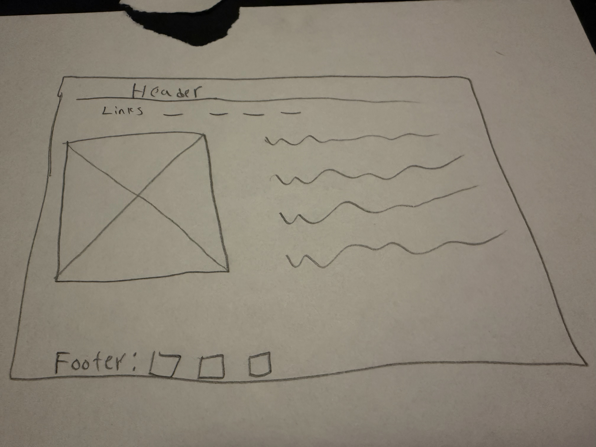

So far this has been a cool experience. I am starting to understand more how to code a website and bring it all together with different pages and what not. A question I have is whats the difference between pchanging the size of and image through the index using width=# and using width=% in css. I am excited to learn more, I want to make websites like the regular ones you see online the kind that busnisses use. I wonder why would someone code a website instead of just using a website builder and what the difference is. Is it more control ? is it because it's not it's own website and is actually linked to the website builder ?. I wonder how that works.